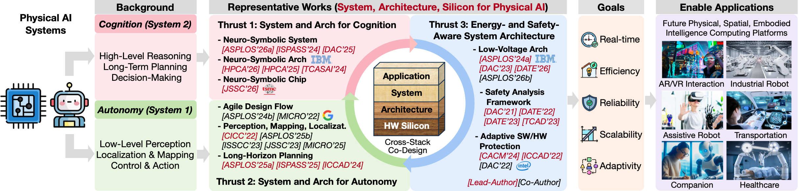

Research
From silicon to systems to agents
Physical intelligence does not come from any single layer of the computing stack — it emerges when algorithms, systems, architectures, and silicon are designed together. Our research spans four tightly connected thrusts, sharing one methodology: cross-layer co-design.
